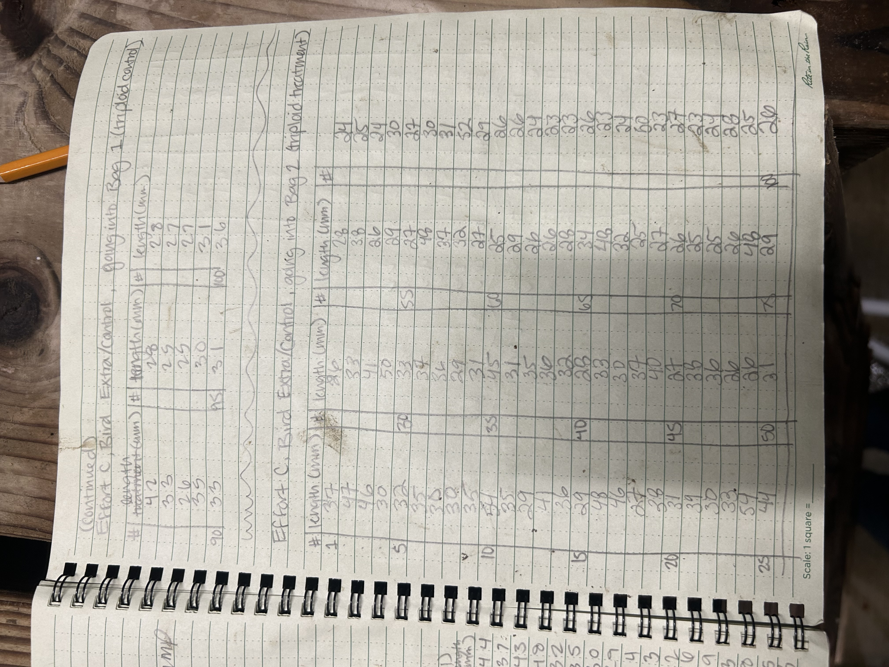
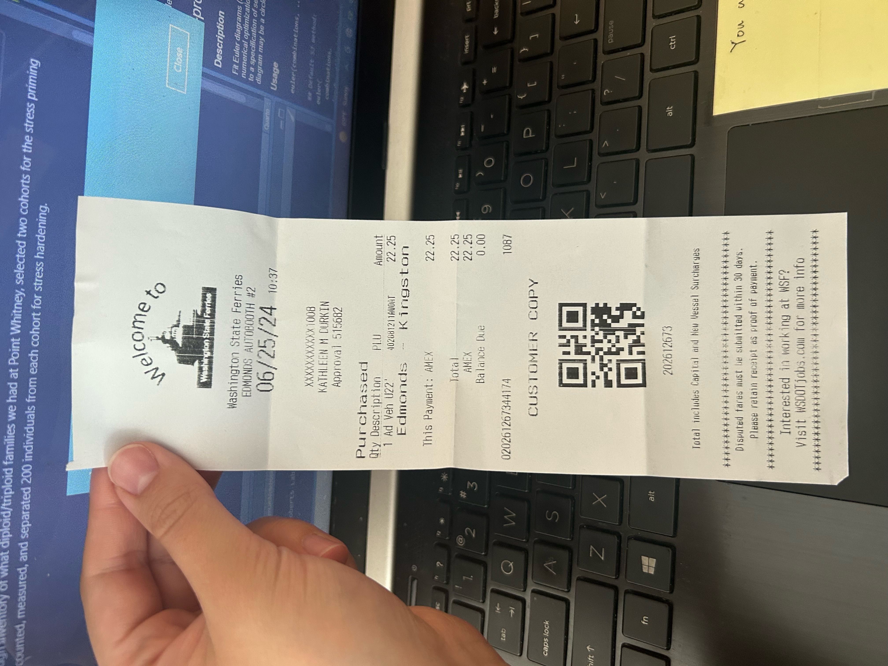
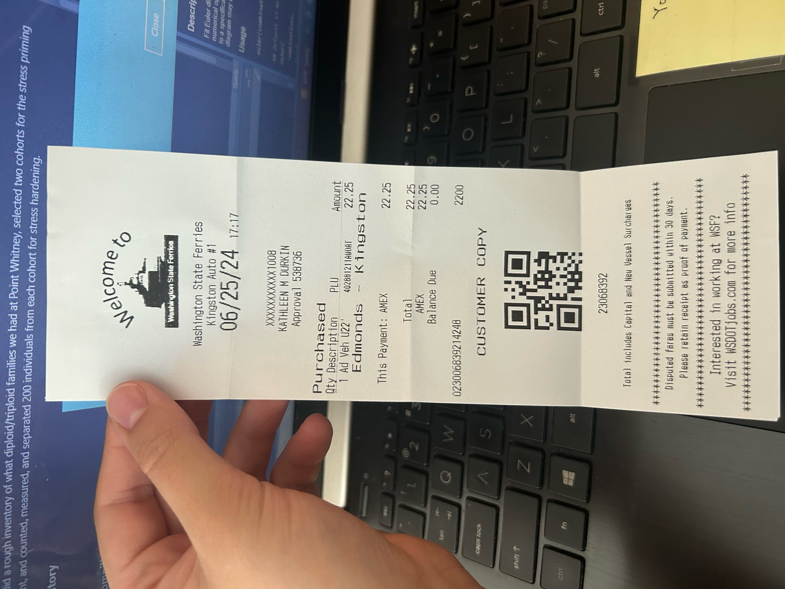

Today we did a rough inventory of what diploid/triploid families we had at Point Whitney, selected two cohorts for the stress priming experiment, and counted, measured, and separated 200 individuals from each cohort for stress hardening.
Compiling and measuring treatment groups
I counted 200 oysters from the bag “Effort C - Bird, Extra” (adult, triploid, untreated) and 200 from bag “13” (adult, diploid, untreated), making an effort to select roughly the same size class (20mm - 60mm in length). I then measured the length of each with calipers and separated into four treatment bags of 100 oysters each (2 bags of triploids, 2 bags of diploids). Oysters were not individually labelled/tagged. See photos of the datasheets below and digital spreadsheets here.
Observations:
The diploids were generally a bit bigger, there were more oysters larger than the desired size range (20mm - 60mm), and there were more dead oysters. There were also several instances in both groups of two oysters fused together, and these were excluded from the oysters compiled for the experiment.6
Length summary stats (mm):
| Bag | Sample size | Min | Max | Range | Mean | Median |
| triploid control | 100 | 23 | 65 | 42 | 35.62 | 34 |
| triploid treatment | 100 | 23 | 54 | 31 | 32.47 | 30 |
| diploid control | 100 | 18 | 60 | 42 | 37.42 | 36 |
| diploid treatment | 100 | 21 | 65 | 44 | 39.77 | 38 |



Bags are green mesh, and were labelled with a number (Bag 1, Bag 2, Bag 3, Bag 4), ploidy (triploid or diploid), and treatment group (control or treatment), as well as the identifier “UW-KD, Roberts” to distinguish our bags from others in the hatchery. For each bag, one tag was placed inside the bag and an identical tag was attached to the exterior with a zip tie.
| Bag 1 | triploid | control |
| Bag 2 | triploid | treatment |
| Bag 3 | diploid | control |
| Bag 4 | diploid | treatment |

Stress hardening plan
Oysters are being held at “ambient” in outdoor tank at the Point Whitney Shellfish Laboratory, with water temperature held at 22C.
The stress hardening regime will involve placing the treatment oysters (100 triploid and 100 diploid) in a heated tank for four hour sessions, three times a week, for two weeks. After a hardening session they will be placed back in the ambient tanks.
First hardening session on Wednesday, 06/26/2024, performed by Steven.
Second hardening session on Friday, 06/28/2024, will be performed by Ariana.
I think the rest (Mon 07/01/2024, Wed 07/03/2024, Fri 07/05/2024, Mon 07/08/2024) will be done by me.
UCar rental/mileage details
Quick overview of Ucar rental and ferry reciepts. I also want to get an estimate of my transport costs for one day at the hatchery.




| UCar max daily rate (5+ hrs): | $34.45 |
| Mileage (110 miles x $0.34/mile): | $37.40 |
| Ferries (out and back): | $44.50 |
| Total cost: | $116.35 |
Would it be cheaper to drive all the way around, to avoid ferry costs?
Roundtrip mileage if I take the ferry route: 120 miles (~4 hours)
Roundtrip mileage if I take the long way around: 240 miles (~5 hours)
Mileage difference: 120 miles = $40.80
So driving the long, ferry-free route would have essentially the same additional mileage cost as the ferry fees. In other words, it would cost the same. Since The ferry route saves some time and involves less driving, I’m going to stick with it.